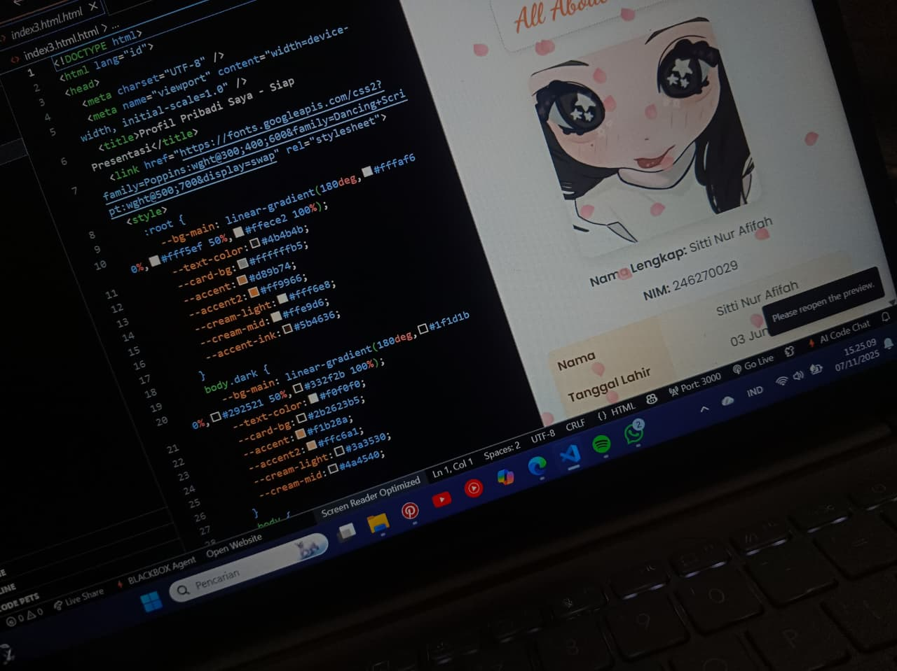

Learning HTML, CSS, and basic website structure
Learning Code & Web Development
This project documents my journey learning how websites are built. Starting from understanding HTML structure, practicing CSS styling, and exploring layout systems. Each stage helped me understand how elements, spacing, and components work together.
Key Features
- Building simple HTML layouts
- Adding CSS for clean & responsive design
- Experimenting with flexible UI components
Objectives
- Master HTML & CSS basics
- Improve coding problem-solving
- Prepare for learning JavaScript